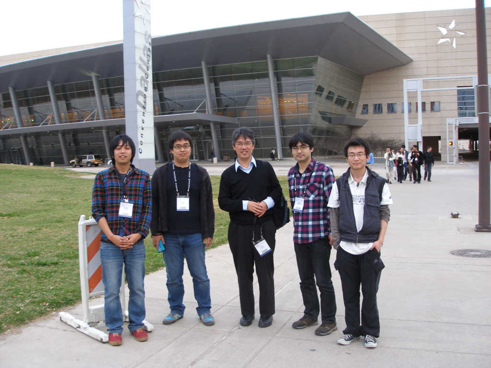

APS March Meeting
3 月 21 日から 25 日にアメリカのテキサス州ダラスで開催された APS March Meeting に参加しました。

発表タイトル
上野哲朗 (D3) 口頭発表
「 Interface structure and magnetic anisotropy of Fe/Pd(001) and Pd/Fe/Pd(001) monatomic films 」
叶茂 (D3) 口頭発表
「 Controlling the topological states of Bi2Se3 by silver atom intercalation 」
「 Electron interference in the 3D topological insulator Bi2Se3 probed by scanning tunneling microscope 」
黒田健太 (M2) 口頭発表
「 Experimental Realization of Three-dimensional Topological Insulator in Ternary Chalcogenides 」
発表タイトル
上野哲朗 (D3) 口頭発表
「 Interface structure and magnetic anisotropy of Fe/Pd(001) and Pd/Fe/Pd(001) monatomic films 」
叶茂 (D3) 口頭発表
「 Controlling the topological states of Bi2Se3 by silver atom intercalation 」
「 Electron interference in the 3D topological insulator Bi2Se3 probed by scanning tunneling microscope 」
黒田健太 (M2) 口頭発表
「 Experimental Realization of Three-dimensional Topological Insulator in Ternary Chalcogenides 」
参照 URL：APS March Meeting